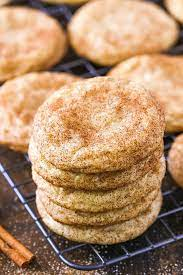

Snickerdoodle Cookies

Description
This recipe uses butter, sugar, vanilla, eggs, flour, baking soda, salt,
cream of tartar, and cinnamon, as well as measuring tools, a mixer, baking
sheets, and parchment paper to bake 36 cookies in a total of 20 minutes.
Ingredients
Cookie Dough
- 1 cup unsalted butter softened
- 1.5 cups sugar
- 1 teaspoon vanilla extract
- 2 eggs
- 2.75 cups all-purpose-flour
- 1 teaspoon baking soda
- 0.5 teaspoon salt
- 2 teaspoons cream of tartar
Cinnamon Sugar Coating
- 0.33 cup sugar
- 2 tablespoons cinnamon
Steps
- Preheat oven to 350 degrees Farenheit
- Mix together flour, cream of tartar, baking soda, and salt in bowl.
- Use a stand mixer to mix butter, sugar, eggs, and vanilla in a second bowl.
- Add first bowl with dry ingredients to second bowl with wet ingredients and mix.
- Combine remaining sugar with cinnamon in a small bowl.
- Use a small scoop to scoop out dough, roll into ball, and roll into cinnamon sugar mixture.
- Place 2 inches apart on a cookie sheet.
- Bake for 8-10 minutes and let cool for a few additional minutes. Enjoy!